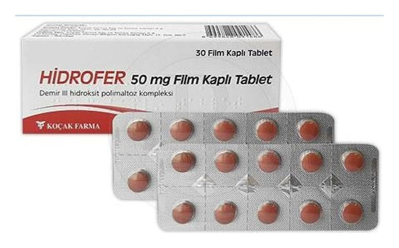

Hidrofer 50 mg Film Kaplı Tablet

Ne için kullanılır
KT · Bölüm 1HİDROFER, demir III hidroksit polimaltoz kompleksi içeren bir film kaplı tablettir. Her bir film kaplı tableti 50 mg Elementer demir’e eşdeğer miktarda 166,667 mg demir III hidroksit
polimaltoz kompleksi içeren 30 film kaplı tabletlik ambalajlarda piyasaya sunulmuştur. Ağız yolu ile uygulanarak, doğal olarak vücutta bütün hücrelerde bulunan ve başta kan yapımı ve oksijenin dokulara taşınması gibi hayati öneme sahip birçok fizyolojik olayda önemli rolü olan demir eksikliğinde veya takviye edilmesi gerektiği durumlarda ihtiyacın giderilmesi için kullanılır.
HİDROFER; Değişik nedenli tüm demir eksiklikleri ve demir eksikliğine bağlı anemilerin (kansızlık) tedavisinde ve korunmada kullanılır.